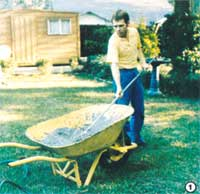
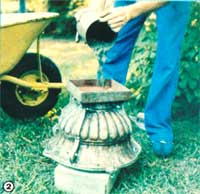
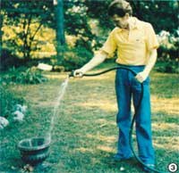
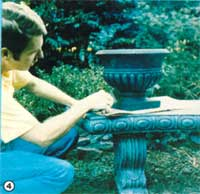
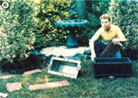

[1] Mixing sand, cement, gravel, and water in a wheelbarrow… economically! [2] Filling the mold. [3] Watering the “green” urn to allow bonding to occur. [4] Glazing the urn… a handsome finished product. [5] Assembling a planter mold. [6] Displaying the completed planter.
Jim White
I've never suffered from a lack of creative ideas... in fact, you might say that I've got plenty of notion. Unfortunately, my brainstorms don't often pay off. I knew my luck had changed, though, when I encountered a classified ad that began TURN CONCRETE INTO GOLD. The mere mention of the precious metal was enough to grab my interest. I read on, and discovered that the ad concerned materials and instructions to be used in making concrete lawn ornaments. "What the hey," I said to myself, and ordered the information booklet.
Now at the time, I knew little about concrete other than that it was heavy and made fine patios and driveways. But I had noticed that it was composed of sand, gravel, cement, and water. Sand-I figured-could be gathered free along riverbeds . . . gravel could be easily (and inexpensively) bought from local outlets . . . and cement ran only about $7.00 for a 94-pound bag of Portland's finest. Water was as close as the backyard hose, and . . . well, it looked as though I might be able to start out in business without spending much money at all!
A RUDE AWAKENING
However, when my key to a fortune-a 77-page publication-arrived a short time later, I was rudely awakened. I'd been thinking of marketing handsome figurines, but the molds needed to produce ornamental statuary were more expensive than I'd dreamed they could be. So I decided to follow a more practical route by starting with such useful objects as flower planters (which required less costly molds).
After studying the booklet, I chose two designs: a discreet Grecian urn, about 12" high, that required a four-piece mold (listing for $100) and a hexagonal stepping stone that could be poured in a two-part hinged mold ($115). To this $215 investment, I added $14 for two quarts of a specially formulated paint to cover the interior surfaces of the molds. (This proved to be a worthwhile expense: The paint protects the forms from constant contact with the abrasive concrete mix . . . and with proper care-which includes cleaning and oiling after each use-I believe the lifetime of my molds can be extended indefinitely.)
Since my initial excursion into the field, I've learned that there are several other types of molds besides the cast aluminum forms I purchased. Some are made from latex, and others are fiberglass. Despite my initial ignorance, though, I believe I wound up with the best possible equipment. Latex molds are very short-lived and hardly worth the price. Fiberglass, on the other hand, is sturdy . . . but the details of complex shapes tend to blur out. Therefore, although cast aluminum is the most expensive to begin with, it's by far the most practical. If you expect to sell quality items (and why bother getting involved in making any product if you can't be proud of it?), you'll need superior molds to make them.
STIRRING THINGS UP
At a minimum cost of between $200 and $300, concrete mixers were-I felt-out of the question, so I bought a $20 propeller blade mixer that fit into my heavy-duty, hand-held electric drill. Supposedly, the tool could be used to stir up concrete in a five-gallon bucket.
Well, maybe somebody could do it, but I never had any success with that method. I eventually settled for the old reliable hoe-and-wheelbarrow routine, and have been using it ever since. It may take a good bit of muscle, but it requires very little out-of-pocket cash!
A CONCRETE RECIPE
Ornamental concrete mixes aren't much like those used in construction work. And I suppose I was lucky that I knew virtually nothing about commercial concrete and had no preconceived ideas. I just studied the instruction booklet and followed directions by combining 3 parts of sand, 1 part of cement, and 2 parts of water. My neighbor, a construction worker, quickly pointed out that my blend was too thin. Nevertheless, to his surprise-and, I have to admit, mine too- the formula worked.
To make a sturdier product, you can add "pea gravel", but there's no standard amount required. Whatever your recipe, though, it's important to keep the sandpile wet during the preparation. Dry sand in the mix will inevitably lead to air holes in the finished product.
Once the poured concrete has hardened, the ornament can be removed from its mold. It'll be quite delicate and unstable at this stage, however, and must be handled with great care. Soak it regularly, with water, for a minimum of three days ... to allow the process of bonding to occur. Without this treatment, the concrete will be brittle and might well fall apart after a short time.
MERCHANDISING YOUR PRODUCT
Although some buyers prefer their ornaments in a natural tone, I've found that more colorful items sell faster and usually command higher prices . . . depending, of course, on how tasteful the colors are and how skillfully they're applied. Wood and masonry paints seem to work just as well as do the high-priced concrete coatings. The choice of latex or oil is up to you, but I find latex paints simpler to use . . . and to clean up after.
The key to selling almost any product, of course, is to let people know that it's available. You won't need to hook up with a retail outlet to market your wares . . . simply display some samples in your front yard and make neat, attractive signs that are visible from the street. Put an ad in your local newspaper, too . . . being sure to include your phone number and, if possible, a photograph of your work.
It's important, too, that your signs and ads reflect the fine quality of your handicrafts. Remember, a messy advertisement will make a potential customer assume that your concrete ornaments will be messy as well.
The income that your creations can bring in will vary, depending on the cost of materials in your area and the time and labor required for the design in question. For the sake of example, though, here are some of my typical price tags: In 1981 I charged $8.50 for the Grecian urn ... $16 for a rustic planter (its mold set me back $130) . . . $50 for a two-piece birdbath (the pair of molds ran $240 and $275 respectively) . . . and $12.50 for a statue of St. Francis of Assisi (which required a $300 form).
When you consider that the cost of the molds is a one-time outlay and that raw materials are relatively inexpensive . . . well, the idea of "turning concrete into gold" isn't so farfetched after all!
EDITOR'S NOTE: To obtain the booklet that got the author started in his lawn ornament business, send $5.00 to Concrete Machinery Company, Inc., Dept. TMEN, 839 Lenoir Road N.W., P.O. Drawer M-99 Hickory, North Carolina 28603.
|
 |
 |
 |
|
 |
|
 |